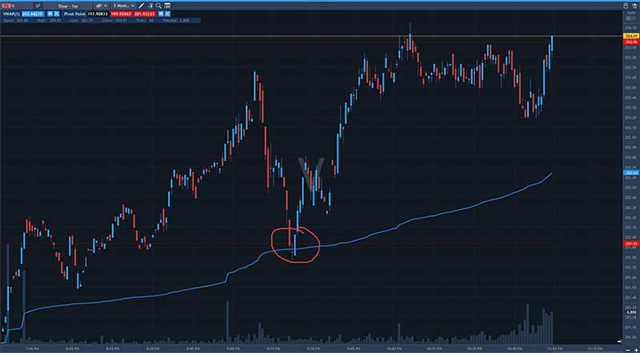
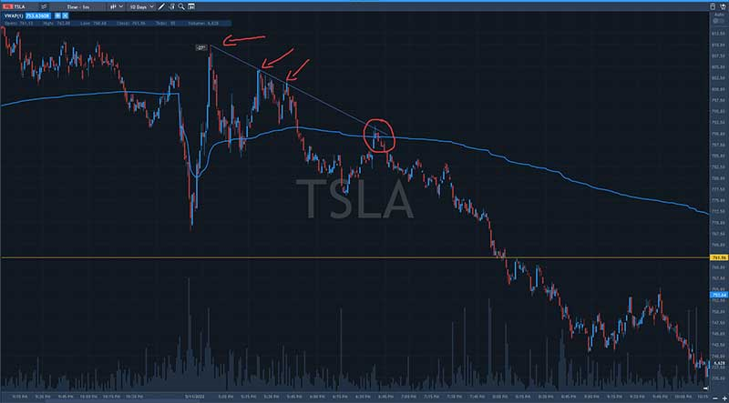
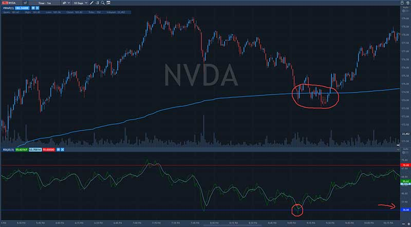
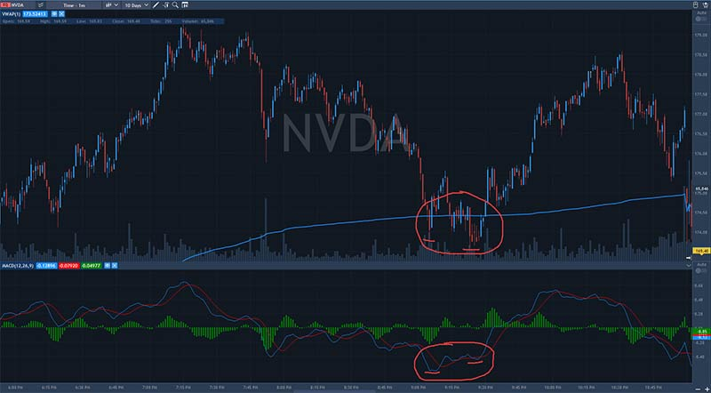

If you’re just dabbling into the trading industry, you need to be proficient in using specific trading indicators to make better trading decisions. One of these indicators you ought to be familiar with is the VWAP. VWAP or Volume-Weighted Average Price is an indicator that traders and trading companies use to make trading decisions.
But unlike other indicators, it is not ideal to use VWAP alone, or you will get a lot of false predictions. So, how exactly are you supposed to use VWAP the right way? Keep reading as this article will guide you on the right way to use this indicator for day trading.
What is volume-weighted Average Price (VWAP)?
Before we talk about using the VWAP, let’s first understand what the VWAP is all about. Essentially, VWAP is an indicator that calculates the average price of stocks based on the number of shares traded at different prices. Usually, VWAP is calculated within a one-day time frame.
The VWAP is an indicator that helps traders and analysts evaluate the current price of stocks. They can determine whether it is underpriced or overpriced compared to the day’s average trading price. Often, this indicator is used by traders to facilitate an exit or entry position.
Similarly, the VWAP is helpful to traders in deciding whether to adopt an active or passive approach to position entries. Many traders use this indicator to buy shares at relatively low prices and sell them at comparatively higher prices.
How to calculate VWAP?
If you are going to use VWAP, you need to be familiar with calculating it. However, its calculation is quite straightforward; traders can use the opening price and adjust it in real-time up to the closing session. Essentially, the formula for calculating VWAP is as follows:
VWAP = (Cumulative Total Price * Volume)/Cumulative Volume
The typical price of any time frame is the average of the candle’s high, low, and closing prices. If you want to apply this formula, the calculation should begin with the Typical Price (TP) of the first completed candle on the chart. For example, consider the following pre-selected input: if H=49.23, L=41.22, and C=46.82, then the typical price will be:
TP = (49.23+41.22+46.82)/3
TP = 45.76
Next in the VWAP calculation is to multiply the TP by the volume in the time frame to measure the total price volume. If V=45,000, then the TPV calculate as follows:
TPV = 45.76*45000
TPV = 2059200
Furthermore, the first candle ends up being the TP since the volume components cancel out the first iteration of the calculation. But take note that things change for the next candle. As such, the formula then calculates the cumulative price and volume in the following procedure for the second candle and subsequent candles after that:
[TPV (Candle 1) + TPV (Candle 2)] / [(V (Candle 1) + V (Candle 2)]
Suppose the second candle closed with a typical price of 48.74 and has a volume of 43,000, then the total price volume of the second candle will be 2095820. You can add this amount to the TPV of the first candle. Thus, the VWAP can be calculated by dividing the cumulative TPV by the cumulative volume. Therefore, from the example above, the VWAP is calculated as:
VWAP = (2059200 + 2095820) / (45000 + 43000)
VWAP = 47.22
This calculation can help traders know the VWAP for every data point in an intraday stock chart. However, this calculation can be done automatically by the charting platform algorithm. As such, you only need to specify an intraday time frame to see the results of the VWAP calculation.
What is the VWAP Setup?
Now that you understand the idea of VWAP, let’s take things a notch higher. When you want to enter a trade using VWAP, there are two basic setups: the pullback and the breakout entry. Considering that intraday traders only have minutes to a couple of hours to make a trading decision, the closest entry at a support level can distinguish between failure and success in a trade. Let’s dig into the entry points for these setups.
VWAP Pullback Entry
The pullback entry setup is for the more aggressive traders. It involves closely watching the stock’s price action as it approaches the VWAP. To use this setup, wait for a break from the VWAP. And when that happens, watch out for the tape action on the sales and time.
You need to identify when the selling pressure is spiking for this setup. According to some traders, it looks like a Christmas light with many green and red candles, as the orders are going in so quickly.
Usually, the tape (sales and time) goes crazy.
Note that using the pullback entry setup will likely break most entry rules. One major challenge with this approach is that you do not know if the price will breach VWAP by 1%, 4%, or greater.
VWAP Breakout Entry
The breakout entry setup is ideal for new traders and those new to the VWAP indicator. The use of breakout entry requires less proficiency with tape reading. In other words, you wait for the stock to test the VWAP to the downside.
When using the breakout entry, you will want to watch for the stock to close above the VWAP. Next, you place your buy order above the high of the candle that closed above the VWAP. Although breakout entry is a more straightforward approach, it may open you to more risk. However, your success may eliminate the risk involved.
Ideally, using this approach entirely depends on your risk appetite and where you are in your trading journey. The breakout entry approach works excellently for long traders and short trades.
Technical Indicators to Use with Volume-Weighted Average Price Indicator
As we said earlier, if you will use the VWAP indicator, you shouldn’t use it by itself. It is advisable to use it alongside other technical indicators to get better entry and exit positions when intraday trading. Below are some of the most common technical indicators intraday traders use with VWAP to get better results:
Pivot Points
Pivot is a technical analysis indicator intraday traders use to determine the overall trends and reversal of the market over different time frames. It is the average of the intraday low and high and the closing price from the previous trading day. If the next day trading falls below the pivot point, it indicates bearish sentiments, whereas if it falls above the pivot point, it indicates an ongoing bullish sentiment.
On either side of a daily pivot point are resistance and support levels, where the resistance is above the pivot and the support is below the pivot. Using the resistance, support, and pivot point with VWAP will help you determine entry, stop, and profit-taking levels with a higher degree of confidence.

Trendlines
When it comes to intraday trading, uptrends and downtrends are hot topics. Using trendlines to make trading decisions ensures that the underlying market conditions are in your favor rather than against it. Trendlines are easy to recognize lines that connect a series of prices. The line drawn on the char gives intraday traders a good idea of the direction in which a stock might move.
Using trendlines with VWAP will give you a clearer picture of when to enter and exit any particular stock. A downward sloping trendline indicates an excess amount of supply of a specific security. It can also be seen as a sign that market participants are more willing to sell an asset than buy it. On the contrary, an upward sloping trendline indicates that the asset demand surpasses its supply. It can also be seen as an indication that the price will likely continue in its upward direction.

RSI
RSI, or Relative Strength Index, is a momentum oscillator. It measures price movement speed and change. What the RSI does is that it measures the severity of a stock’s recent price changes to evaluate whether a stock is overbought or oversold. Because the RSI is displayed as an oscillator, it can read from 0 to 100.
Traditionally, when the RSI falls below 30, the stock is oversold or undervalued. Similarly, when the RSI falls above 70, the stock is overbought or overvalued. RSI can help intraday traders know when a store signals bearish or bullish price momentum. And when you use the RSI with the VWAP, it helps you better predict the market’s direction.

Moving Average
Moving average is a simple indicator intraday traders use to smooth the price data by creating a constantly updated average price. Using the moving average indicator essentially cuts down the amount of noise on a price chart. The moving average indicator comes with several advantages, such as tailoring it to any time frame that suits your trading style.
Combining the moving average results with VWAP gives you a clearer picture of the direction of a particular stock.
For example, with the moving average, one can consider its direction to determine how the price is moving. If the direction of the moving average is angled downwards, then its price is moving down overall. Similarly, if the moving average is angled upwards, its price increases. And if it is moving sideways, its price is likely in a range.
MVWAP
The MVWAP or Moving Volume Weighted Average Price is a user-defined average of VWAP. Although it is a particular type of price average, it considers the volume of price action. It is commonly used as it has no final value, meaning it can run fluidly from one day to the next. Using MVWAP with VWAP gives traders a broader (long-term) view of a stock’s performance.
Using MVWAP acts as a benchmark for individuals and institutions seeking to gauge if they have poor execution or good execution on their orders. The MVWAP considers the price and volume of a stock, which works excellently in determining the best entry and exit point of a stock. You get a clearer picture of what to do, which helps shorten the lag with the indicator.
MACD
Lastly, you can consider using the MACD or Moving Average Convergence Divergence indicator with the VWAP. The MACD indicator follows the momentum indicator, which shows the relationship between two moving averages of stock prices. Analysts commonly use MACD with RSI, but you can also use the VWAP to get a complete technical picture of the market.
The MACD indicator measures the momentum of the market. You can also use it to signal an upcoming trend change by showing divergence from price. However, due to MACD measuring different factors, they may sometimes give contrary indicators.

Strategies for Using Volume-Weighted Average Price (VWAP) Indicator
You should already know that VWAP is an indicator intraday traders use to determine the best profitable entry and exit points. While using the VWAP is excellent, it is essential to have a strategy to make buying and selling orders more efficient. In this section, we will be looking at four common approaches to using VWAP in trading.
Pullback
A pullback is a strategy that tells you when a stock downtrend or uptrend changes as its price makes minor changes in the opposite direction. Note that using pullback is a common strategy, especially in heavier trends. So, it is a good sign when using this strategy and seeing the price extend past VWAP and the moving average during the day. Take a chart, for instance, the upward trend is clear, and you should prepare for the pullback and buy some stock when it moves to the downside. You can follow a rule of thumb to buy something on a one-day-only clearance sale.
Fade
Another strategy you can use is fade, which is a contrarian strategy. Fade is a strategy that involves taking an opposite position after a movement with strong momentum. A successful fade strategy relies on the price recovering from the counter-movement. Implementing VWAP with the fade strategy waits for the indicator to act when the price turns green in a bearish trend or signals a pullback during a bullish move. Note that the stock becomes over-extended when using this strategy, opening up more than 10% on the upside. The essential condition for the strategy is sufficient trading volume.
Afternoon High
You can take a wide guess about what this strategy is all about from the name. IT is essentially an afternoon setup that experiences significant fluctuation in the afternoon. Stocks that show big pre-market movement are tremendous indicators to use this strategy. Stocks with a strong opening tend to consolidate above the VWAP in the afternoon, so it is better to enter a long trade before the price hits the VWAP. Usually, the 2 PM ET window is the high of the day. So it is essential to place the stop loss of 2% below the VWAP.
Parabolic Short
Last but not least, intraday traders often use the short parabolic strategy to determine when to enter and exit a trade. With the short parabolic strategy, traders can determine the speed at which the price moves increase exponentially. The word parabolic describes a stock that goes down or up fast. The VWAP helps filter out opportunities for short trades. If you are going to use the parabolic strategy, you should enter a short position during the crossover of the VWAP, and you should exit at the first high of the day bar.
What are The Benefits of Using the Volume Weighted Average Price?
As with any trading indicator you are using, the VWAP comes with several benefits. However, the VWAP and other trading indicators are most beneficial when you know how to use them effectively. Below are some of the most common benefits of using the VWAP indicator.
VWAP Calculation Factors in Volume
One of the most apparent benefits of using VWAP is its calculation factor in volume. Essentially, VWAP is the product of the number of shares by the price and dividing it by the total number of shares. This formula helps you quickly determine the VWAP of stocks. And since VWAP takes volume into account, you can rely on it more than the mere arithmetic means of the transaction price in a period.
VWAP Indicator Enables Day Traders to Sell High and Buy Low
If the VWAP strategy generates a buy signal, you will likely execute the order and leave the outcome to chance. However, professional intraday traders do not place an order as soon as their system generates a trade signal. Instead, they wait for a more favorable price before buying. By knowing the VWAP of stocks, you can decide whether you are paying less or more for a stock compared to what other traders are paying.
A VWAP Cross Can Signal a Change in Market Bias
Buying a stock low and selling high is the aim of every trader. But as a momentum trader, you are essentially looking to buy and sell stocks when their price goes up. With the VWAP cross, you can locate and trade momentum in the market. But since the VWAP indicator looks like an equilibrium price in the market, when its price crosses above the VWAP, you can easily interpret it as a signal that the momentum is going up. In other words, VWAP helps you determine stocks that traders are willing to pay more money to acquire.
VWAP Can Help Beat High-Frequency Algorithms
Come to think of it, have you ever pondered on the reason the liquidity levels in the stock market have gone up over the past few years? The truth is that high-frequency algorithms can act innocently when the liquidity is low. However, these high frequencies can become violent as they attempt to bid up the price of a stock by placing fake orders, only to cancel them right away. This is where the VWAP comes into the picture. Rather than focusing on the irregularity of the algorithm, you can place limit orders at the VWAP level to slowly accumulate your shares.
VWAP Can Help Day Traders Confirm Counter Trend Trading Opportunities
Have you ever wondered if a stock is oversold or overbought and if it is time to take counter-trend trade? If you have, you might want to take a second look at the VWAP. Using only the RSI and guessing can often give you false signals. Before making any trading decision, you need strong evidence that shows there will be a strong trend or chance the market will turn back. Using the VWAP indicator will make your life so much easier in this regard. Professional traders have a rule of thumb when using VWAP “if the line is flat, but the price has gone down or up, the price will likely return to VWAP.
Can we say VWAP is a Reliable Indicator?
Intraday trading is inherently risky, but using tools like the VWAP helps bring more consistency. However, using VWAP as your sole indicator is not recommended. There are situations where you use the VWAP indicator, and it gives false signals. Sometimes, these false signals may be due to market noise or other irregularities.
So, it is essential to understand situations where VWAP may produce a false signal. While VWAP may be reliable most of the time, making frequent trades using this indicator may cost your profits.
Conclusion
In summary, VWAP is an indicator every intraday trader needs to get familiarized with as it determines the average weighted price. No matter your trading style, and even though there are so many strategies you can use the VWAP to improve your trading portfolio, it is essential to be familiar with the VWAP.
Several day trading strategies are built around the VWAP, such as using tools like pivot points, moving average, RSI, etc. But it is essential to state that VWAP is prone to false signals when used as the sole indicator or in the wrong market environment.
If you liked this post make sure to share it!